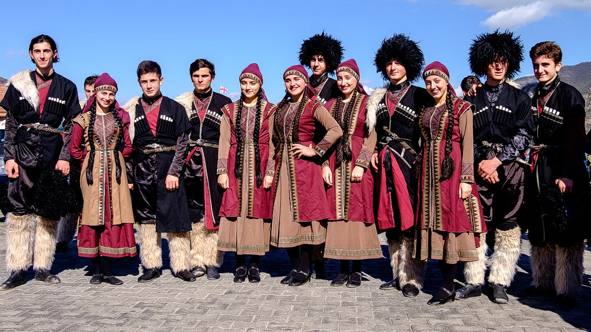

Kultur & Tradition Georgiens
Georgier sind für ihre herzliche Gastfreundschaft bekannt und laden Gäste zu langen Festmählern ein. Bei den Supra, den traditionellen Tafeln, sitzen Familien und Freunde oft stundenlang beisammen. Musik und Tanz spielen eine zentrale Rolle in allen Feierlichkeiten und im Alltag. Die georgische Polyphonie wurde von der UNESCO als immaterielles Weltkulturerbe ausgezeichnet. Handwerkliche Traditionen wie Filigranschmuck und kunstvolle Webereien haben eine lange Geschichte. Die georgische Schrift gehört zu den ältesten Alphabeten der Welt und ist bis heute in Gebrauch. Religiöse Bräuche und orthodoxe Feste strukturieren das Jahr und verbinden Gemeinschaften. Viele Klöster und Kirchen zeigen bis heute den engen Zusammenhang von Glaube und Kultur.
